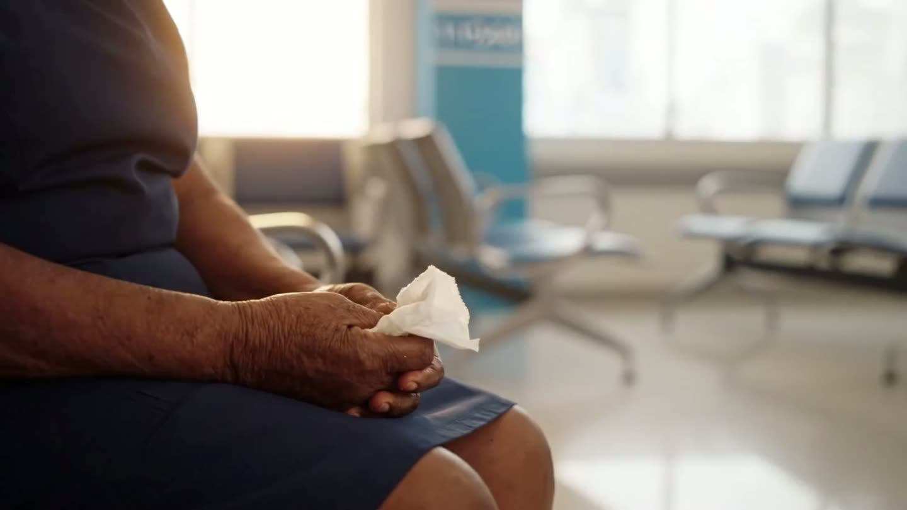
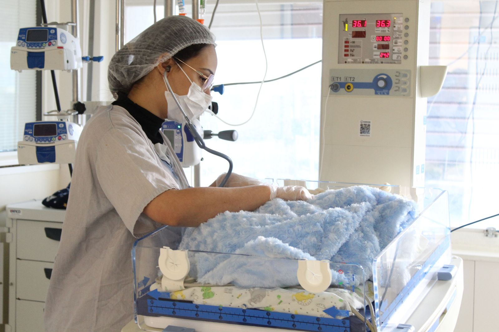
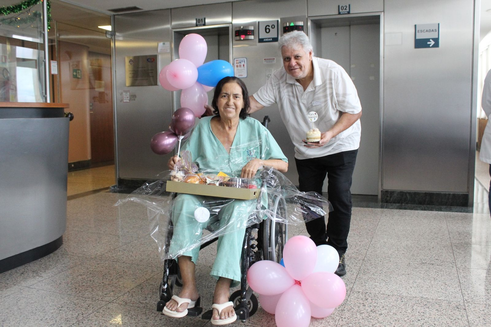
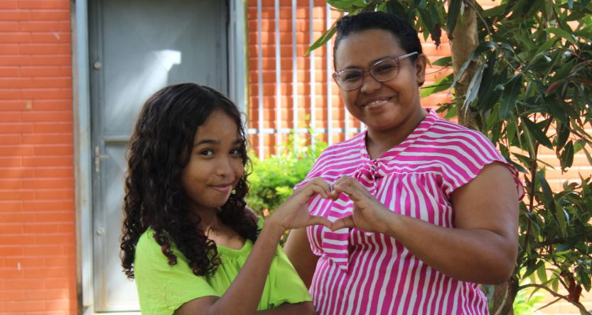

Certificação AHA · 2 anos
ACLS — Suporte Avançado de Vida
Para médicos, enfermeiros e fisioterapeutas que atuam em emergências cardiovasculares.
Carga16 horas
Formato2 dias
InvestimentoR$ 1.600

Cardiologia de alta complexidade e transplantes de órgãos e tecidos, com ciência e cuidado humano.
Médicos, enfermeiros, psicólogos, nutricionistas, fisioterapeutas e assistentes sociais ao lado do paciente em cada etapa.
Transplantes de coração, fígado, rim, córnea e medula óssea realizados desde 2009.
Mais de 14 mil cirurgias cardíacas com foco no que importa: devolver cada paciente à sua rotina.
Atendimento SUS e mais de 24 convênios. Agende sua consulta ou exame.
Médicos, enfermeiros, psicólogos, nutricionistas, fisioterapeutas e assistentes sociais trabalhando juntos em todas as etapas da saúde cardiovascular.
Dados acumulados de 2009 a fevereiro de 2025 (transplantes até setembro de 2025). Veja todos os indicadores no Portal da Transparência.

UTI CardiopediátricaDo agendamento ao acompanhamento, uma equipe multiprofissional cuida de você em cada etapa.
Solicite sua consulta ou exame on-line ou pela Central (61) 3451-1000.
Consulta com especialista e exames para um diagnóstico preciso.
Clínico, intervencionista, cirúrgico ou transplante — com equipe dedicada.
Reabilitação e seguimento contínuo para você voltar à sua rotina.

Cada paciente é acompanhado por uma equipe que entende que tratar o coração também é cuidar da pessoa, da família e da recuperação.
Cursos com certificação internacional da American Heart Association, ministrados por instrutores credenciados e cardiologistas do ICTDF.
Para médicos, enfermeiros e fisioterapeutas que atuam em emergências cardiovasculares.
Para todos os profissionais e estudantes da área da saúde. RCP de alta qualidade e uso do DEA.

Faça a pré-marcação on-line ou fale com a nossa Central de segunda a sexta, das 7h às 19h.